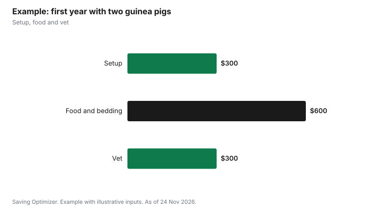

Pets · Canada
Small Pets Cost in Canada: Rabbits and Guinea Pigs

Rabbits and guinea pigs are often bought as low-cost pets, but they aren't. Rabbits can live about 15 years, guinea pigs need a companion, and both eat hay all day. Adoption is cheap (BC SPCA charges $75 for a rabbit), but food, bedding and an exotics vet add up every year.
Key takeaways
- BC SPCA rabbit adoption: $75 (checked 24 Nov 2026).
- Rabbits can live about 15 years, says BC SPCA.
- Guinea pigs: same-sex pairs, at least 65 by 65 cm each.
- Oxbow Western Timothy Hay: $29.99 for 90 oz at PetSmart.
- Find a vet who treats rabbits and guinea pigs before you adopt.
What they need
| Need | Rabbit | Guinea pig |
|---|---|---|
| Lifespan | Up to about 15 years (BC SPCA) | Several years |
| Company | Often happier in pairs | Same-sex pairs |
| Space | Large pen and daily exercise | 65 by 65 cm each, solid floor |
| Diet | Unlimited hay, greens, pellets | Unlimited Timothy hay, vitamin C pellets, vegetables |
| Vet | Exotics vet; spay or neuter | Exotics vet; nail trims every 4 to 6 weeks |
Ways to keep costs down
- Adopt from a shelter; fees often include a health check.
- Buy hay in larger bags.
- Build a pen from storage cubes instead of a pet-store cage.
- Use recycled paper bedding or washable fleece.
- Set aside money for vet visits.

First-year budget: an example
Example: two guinea pigs might cost $300 to set up, $600 for food and bedding, and $300 for a vet visit, about $1,200 in the first year.
See a pet emergency fund and secondhand pet gear.
Sources
- BC SPCA, Caring for a pet rabbit and adoption fees, checked 24 Nov 2026.
- BC SPCA, Caring for a guinea pig, checked 24 Nov 2026.
- PetSmart Canada, Oxbow Western Timothy Hay, checked 24 Nov 2026.
Frequently asked questions
How much does a rabbit cost in Canada?
BC SPCA adoption is $75, but care costs add up over a lifespan of up to about 15 years.
Are guinea pigs cheap pets?
Not really. They need a pair, space, hay, vegetables and an exotics vet.
Do guinea pigs need a friend?
Yes. BC SPCA says two same-sex guinea pigs can live together.
How much does hay cost?
Oxbow Western Timothy Hay was $29.99 for 90 oz at PetSmart on 24 Nov 2026.
Do rabbits need a special vet?
Yes. Look for a vet who treats exotic pets.
Researched and drafted with AI assistance and fact-checked against official Canadian sources. How we create content.
Note: Not veterinary advice. Amounts are examples. Education only.